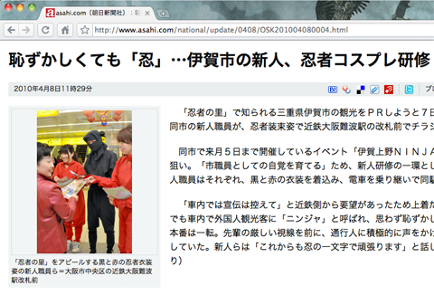

伊賀市職員では「忍者姿」での研修が行われる 39
ストーリー by reo
近鉄職員は甲賀者に違いないですぞ 部門より
近鉄職員は甲賀者に違いないですぞ 部門より
ある Anonymous Coward 曰く、
伊賀忍者で知られる三重県伊賀市にて、市職員の研修として「忍者姿」でのチラシ撒きが行われたそうだ (asahi.com の記事）。
「市職員としての自覚を育てる」のが目的とのこと。世の中に珍妙な研修は数あれど、公務員がこのような研修をするのは珍しいのでは？

一方、徳島では (スコア:3, 興味深い)